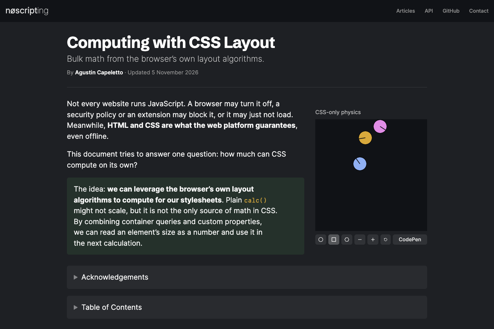
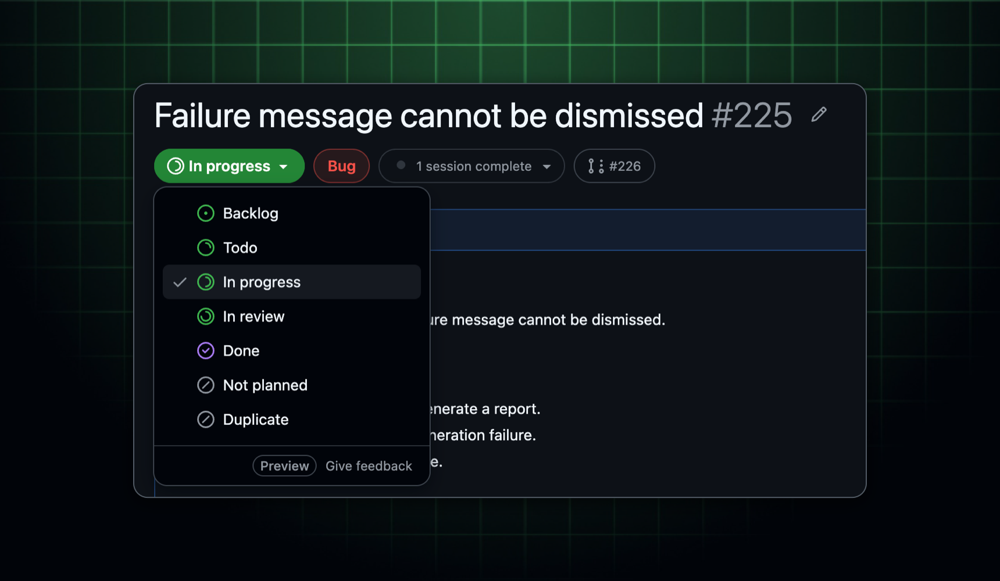
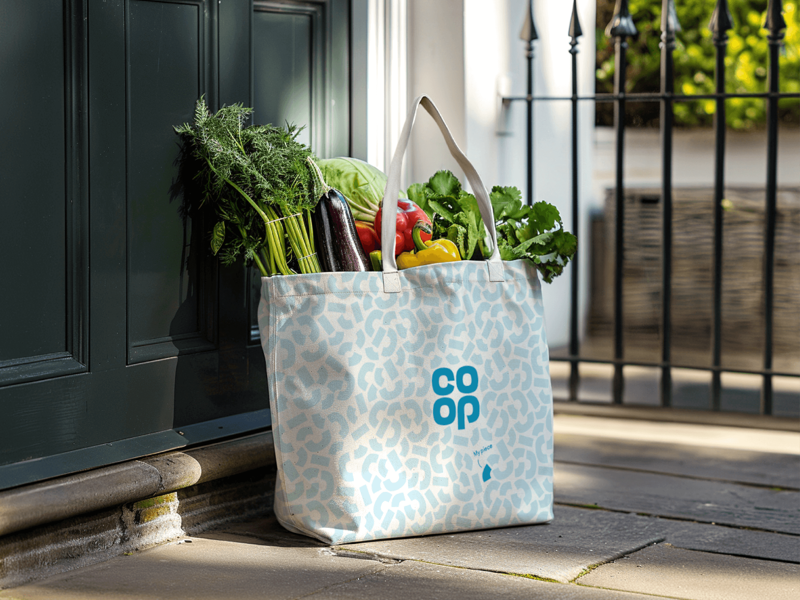
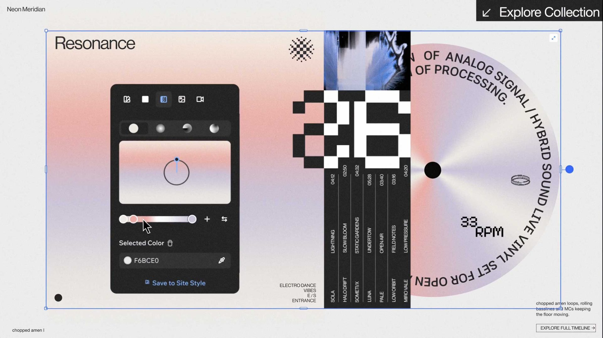

W3C 昨天公开了指针驱动动画和滤镜效果两份工作草案，分别讨论指针位置怎样映射成进度、背景滤镜能采到哪一层。GitHub 同期把任务状态带进 Issue 和仓库看板，并预告 12 月 1 日起调整「什么动作会让你重新订阅」。这几件事都适合拿来改组件验收：写出状态由什么输入触发、离开后如何恢复、谁能改。Wix Studio Two 的发布片也是这个思路，把一次选中、改色或导入后的结果留在画面里，观众才知道工具改了哪里。
11 月 24 日发布的首份公开工作草案提出 CSS 的 pointer() 与 Web Animations API 的 PointerTimeline，让元素某一轴上的指针位置决定动画进度。元素范围的起点、终点对应 0% 和 100%，草案还定义了可以调整 50% 落点的范围。这是规范草案，浏览器实现进度需要另查。
对有拖动对比、材质预览的组件，先把 0%／50%／100% 分别画清楚，再给触屏和键盘保留可操作的控件。这样将来换时间线实现，产品定义仍然成立。
W3C 草案https://www.w3.org/TR/2026/WD-pointer-animations-1-20261124/
一模一样的磨砂面板，放进带 opacity 的祖先，采到的背景就可能变了。W3C 的首份公开工作草案用 Backdrop Root 描述背景滤镜向上取样的边界，也列了对应的 Web Platform Tests。草案仍待工作组达成共识，当前项目先在目标浏览器跑自己的组件组合。
设计系统里的玻璃材质应注明使用层级。最容易在交付时漏掉的是嵌套弹层，单独预览时通透，接进带透明度过渡的容器后背景就不对了。
W3C 草案https://www.w3.org/TR/2026/WD-filter-effects-2-20261124/ · Backdrop Root / opacity 测试https://wpt.live/css/filter-effects/backdrop-filter-backdrop-root-opacity.html

Agustin Capeletto 把 Grid 的 auto 列当作求最大值，把 Flex 行当作求和，再用容器单位和自定义属性把布局产出的尺寸送入下一步计算。开篇的纯 CSS 小球是演示，真正可以带回项目的是阅读布局的方式。比如一组操作项要按最长标签对齐，先看看轨道尺寸能否直接表达这个约束，省掉一份跟字体加载和本地化一起变化的测量状态。
原文与演示https://noscript.ing/compute

GitHub 在公测中给 Issue 增加 Backlog、Todo、In progress、In review 等状态，仓库的保存视图也能切成看板。关联草稿 PR 会进 In progress，草稿转为待审会进 In review，团队的 GitHub Project 若有同名状态，可以双向同步。
还没实测，先不下结论。对组件库团队，第一条验收用例应该是「代码准备好评审，但视觉还没验收」。如果两件事都落进同一列，设计签核最好留在单独字段里，否则看板的自动推进容易把它藏掉。
GitHub Changeloghttps://github.blog/changelog/2026-11-23-issue-statuses-and-repository-boards-are-in-public-preview/
GitHub.com 计划从 12 月 1 日开始分批迁移通知。手动退订后，自己写评论、提交评审这类活动将保留退订状态，点名、指派或请求评审仍可重新订阅。收件箱显示的通知原因将按优先级排列，邮件头会带上全部适用原因。
协作产品做「取消关注」时，可以直接借用这条规则写验收：参与讨论保留用户偏好，收到明确指派才恢复提醒。用通知邮件做分流的团队则要先查解析器，它现在可能拿到多个原因。
GitHub Changeloghttps://github.blog/changelog/2026-11-24-more-predictable-notifications-on-github-com/
11 月 24 日的 Firefox 161 把标签页组放进应用菜单，方便再找回来，也允许为「复制当前标签页地址」绑定自定义快捷键，默认留空。标签组最实用的设计发生在离开它以后：重新发现入口能不能跟普通页面一样快。复制地址则适合保留为用户主动绑定的高频动作，给已有快捷键配置留出空间。
Firefox 161 发布说明https://www.firefox.com/en-US/firefox/161.0/releasenotes/

SomeOne 把 Co-op 经典标志拆成五种 Membershapes，给食品、保险、法律等不同业务共用，还与 F37 合作推出 Co-op Headline，保留轮廓版和带滚墨质感的 SVG 版。这是回看案例，合作始于 2023 年。袋子上的完整标志负责识别，浅蓝碎片负责形成图案，其中一枚深蓝碎片被单独标出来呼应会员持有的一份。做跨业务的品牌规范时，这张图比一页色板更好用，它直接示范了同一组形状如何在不同尺寸承担不同任务。
SomeOne 项目页https://www.someoneinlondon.com/projects/co-op

Wix 在 11 月初公布 Studio Two，编辑器把生成、画布编辑和 React 代码放在一起，面向 Wix Partners 分批开放。Stash 11 月 24 日收录的是 Wix Studio 自制的 86 秒发布片。片段约 19 秒切到斜放的笔电，代码和排版同框，32 秒左右回到深色 AI 输入框和亮色页面，44 秒附近把人像、字块和蓝色影像切成横条。黑白硬切让工具和作品交替占据画面，像素字和光标在不同镜头中提供连续性。
最适合抄进分镜的是约 71 秒的 Montora 段落。橙色布料和户外人像已经给了作品气质，蓝色选框只在需要说明能动哪个元素时出现。Resonance 也把调色面板和渐变唱片同时留在画面里。下一支工具片可先录一个真实操作，留足时间给「选中 → 改一项 → 看结果」三个状态，尤其把代码导入前后用了哪个组件拍清楚。产品的导入与往返还没实测，先不下结论。
在 Framerate 播放原片https://framerate.tv/embed/s0JOdofI?primary_color=%2523ffffff&track_color=%2523ffffff&theme=minimal
Stash 制作记录https://www.stashmedia.tv/technological-precise-open-wix-launches-studio-two/ · Wix 产品公告https://www.wix.com/blog/meet-wix-studio-two · 开放范围与导入／导出 FAQhttps://forum.wixstudio.com/t/studio-two-your-questions-answered/80700
首页和最新 8 条中只有 Wix 是上期之后的新条目。另两条取自近期已登记作品，补看制作细节。
已覆盖 Pointer-driven Animations、Filter Effects 2、Computing with CSS Layout、GitHub Issue 状态与仓库看板、GitHub 通知订阅、Firefox 161 和 Co-op Membershapes。
视频已覆盖 Wix Studio Two 发布片。Stash 记录 Wix、The Tower & the Witch 与 Give the Gift of Closeness，后两条只补制作细节。后续有新案例、实测或实现细节时再跟进。